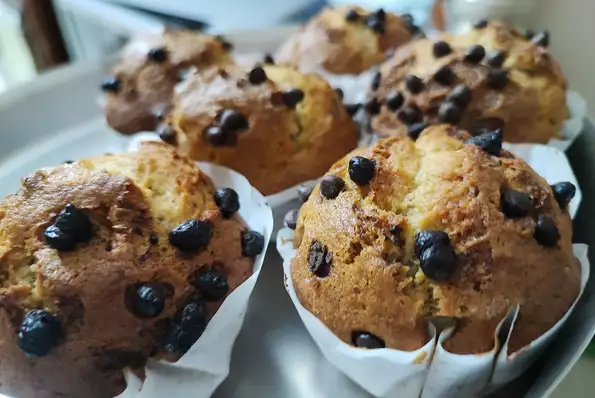

Banana Muffins

Description
These banana muffins are soft, buttery, and spiced with cinnamon. They’re wonderful plain, with chopped walnuts, or even chocolate chips
Ingredients
- 1 and 1/2 cups (188g) all-purpose flour (spoon & leveled)
- 1 teaspoon baking powder
- 1 teaspoon baking soda
- 1/2 teaspoon salt
- 1 teaspoon ground cinnamon
- 1/4 teaspoon ground nutmeg
- 3 large ripe bananas (about 1 and 1/2 cups mashed)
- 6 Tablespoons (85g) unsalted butter, melted (or melted coconut oil)
- 2/3 cup (135g) packed light or dark brown sugar (or coconut sugar)
- 1 large egg, at room temperature
- 1 teaspoon pure vanilla extract
- 2 Tablespoons (30ml) milk
- optional: 1 cup chopped walnuts, pecans, or chocolate chips
Steps
- Preheat oven to 425°F (218°C). Spray a 12-count muffin pan with nonstick spray or use cupcake liners.
- Whisk the flour, baking powder, baking soda, salt, cinnamon, and nutmeg together in a medium bowl. Set aside. In a large bowl or in the bowl of your stand mixer, mash the bananas. On medium speed, beat or whisk in the melted butter, brown sugar, egg, vanilla extract, and milk. Pour the dry ingredients into the wet ingredients, then beat or whisk until combined. If adding nuts or chocolate chips, fold them in now. Batter will be thick.
- Spoon the batter into liners, filling them all the way to the top. Bake for 5 minutes at 425 then, keeping the muffins in the oven, reduce the oven temperature to 350°F (177°C). Bake for an additional 16-18 minutes or until a toothpick inserted in the center comes out clean. The total time these muffins take in the oven is about 21-23 minutes, give or take. (For mini muffins, bake 12-14 total minutes at 350°F (177°C).) Allow the muffins to cool for 5 minutes in the muffin pan, then transfer to a wire rack to continue cooling.
- Muffins stay fresh covered at room temperature for a few days or in the refrigerator for up to 1 week.
Back to Home